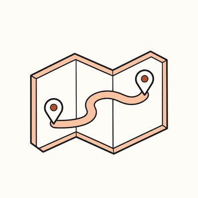

Le bon savoir au bon moment
Un parcours dans l'ordre : ce qui compte le premier jour, la première semaine, puis la suite. L'information arrive quand elle sert.
Trame aide les entreprises qui recrutent à préparer chaque arrivée. Et à garder ce que leur équipe sait faire, même quand quelqu'un s'en va.

Pourquoi
Le manager répète les mêmes explications à chaque arrivée. La recrue attend que quelqu'un soit disponible pour avancer. Et quand une personne part, une partie de ce qu'elle savait part avec elle.
Trame est né de ce constat : préparer une arrivée devrait s'appuyer sur ce que l'équipe sait déjà, pas sur la mémoire d'une seule personne.
Notre approche
Trame ne remplace pas vos outils. Il en tire un parcours, au rythme de la personne qui arrive.

Un parcours dans l'ordre : ce qui compte le premier jour, la première semaine, puis la suite. L'information arrive quand elle sert.
Trame ne garde pas tout. Il retient de vos documents ce qui aide vraiment à prendre le poste.

L'arrivant avance sur son travail réel, avec la méthode et les règles de l'équipe, avant de le soumettre à son manager.
Nos principes
Cinq règles simples, que l'on applique à chaque écran de la plateforme.
L'équipe
Trame est porté par Balthazar Amaudric et Léopold Klein. Nous construisons la plateforme avec les entreprises qui l'utilisent : si vous accueillez quelqu'un bientôt, on aimerait que la vôtre en fasse partie.